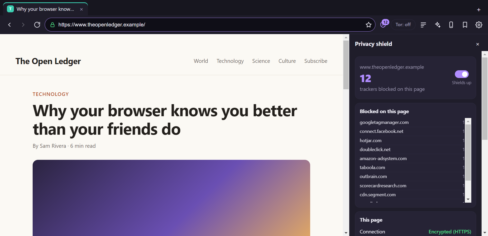
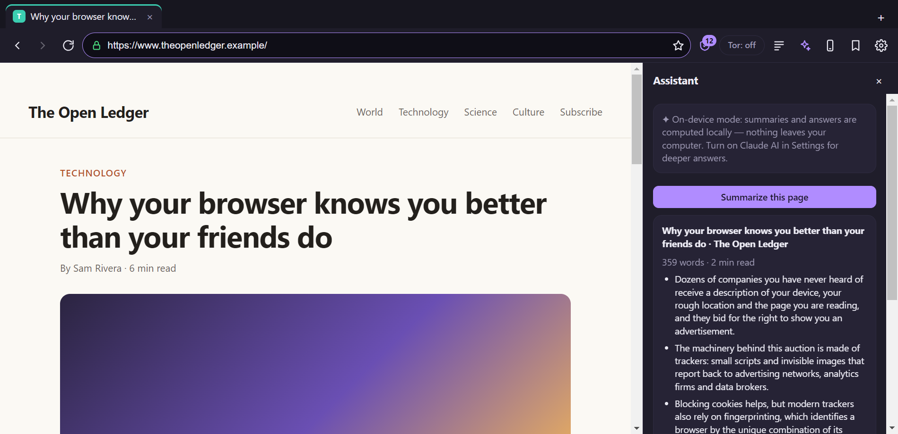
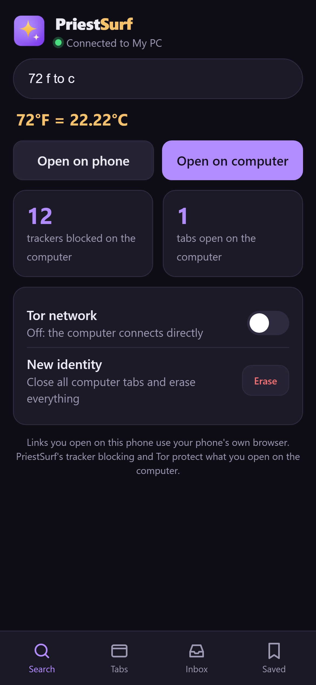

Tor in one click
Hide your IP address by sending all traffic through the Tor network. If Tor goes down, PriestSurf blocks traffic rather than leaking it.
Private browser for Windows
PriestSurf blocks trackers, hides your digital fingerprint and can send everything through Tor in one click. It also summarizes pages, does math in the address bar and connects to your phone.
Version 1.0.0 · Windows 10 & 11 (64-bit) · 78.5 MB · No account needed

Privacy, switched on from the first second
No settings to learn and no extensions to install. Every protection below is on by default.
Hide your IP address by sending all traffic through the Tor network. If Tor goes down, PriestSurf blocks traffic rather than leaking it.
Ads, analytics and data brokers are stopped before they load. The shield shows exactly who tried to follow you on each page.
Every PriestSurf user reports the same screen, hardware, language and timezone, so websites can't single you out even without cookies.
Every connection is upgraded to an encrypted one. If a site doesn't support encryption, PriestSurf asks before loading it unprotected.
History, cookies and cache live only in memory and disappear when you close the browser. New identity erases them instantly.
Tracking tags like utm_ and fbclid are removed from links. Third-party cookies and WebRTC IP leaks are blocked.
Intelligent, without spying on you
PriestSurf's smart features run on your own computer, so nothing you read or type is sent anywhere to make them work.


PriestSurf on your phone
The phone app connects straight to PriestSurf on your computer over your home Wi-Fi. It works on iPhone and Android, with no app store and no account.
Out of the box
Download
Version 1.0.0 · Windows 10 and 11, 64-bit
Installs PriestSurf with Start menu and desktop shortcuts, and can be uninstalled from Windows Settings.
Download installer · 78.5 MB298237e42762dfa74228e94777bd9d9d76cd210f082834eba4c7d02f42261586A single file that runs without installing. Handy for USB sticks or shared computers.
Download portable · 78.2 MB6f666c6d762b94e1fca5fa3f286709c2a0a19f2b3998f855d60989a06b079ef1Windows may say “Windows protected your PC”. That's because PriestSurf is new and not yet code-signed. Click More info, then Run anyway. To check your download is genuine, compare its SHA-256 checksum with the one above.
Using a Mac or Linux? PriestSurf is Windows-only for now. Your phone gets the companion app straight from PriestSurf on your PC.
Questions
No. There's no account, no telemetry and no usage tracking. The browser's own interface never connects to the internet. Your bookmarks and settings stay on your computer.
Not quite, and we'd rather be honest about that. PriestSurf routes through the same Tor network and copies Tor Browser's approach to fingerprinting. But Tor Browser is a hardened browser built and audited by the Tor Project. For everyday privacy, PriestSurf is a big step up. If your safety depends on staying anonymous, for example as a journalist or activist, use Tor Browser.
Click the Tor button in the toolbar. PriestSurf connects through Tor running on your computer: either Tor Browser open in the background, or the Tor Expert Bundle (set its location in Settings and PriestSurf starts it for you).
No. Summaries, page answers, the calculator and unit conversion all run on your computer. The optional Claude AI assistant only sends a page's text when you press Summarize or Ask, and it's off until you turn it on with your own API key.
Windows SmartScreen warns about new apps that aren't code-signed yet. Click More info, then Run anyway. To make sure the file wasn't tampered with, compare its SHA-256 checksum with the one on this page.
No. Turn on Phone Link in PriestSurf, scan the QR code with your phone, and add the app to your home screen. Your phone and computer need to be on the same Wi-Fi.
Open Windows Settings, go to Apps, find PriestSurf and click Uninstall. If you used the portable version, just delete the file.